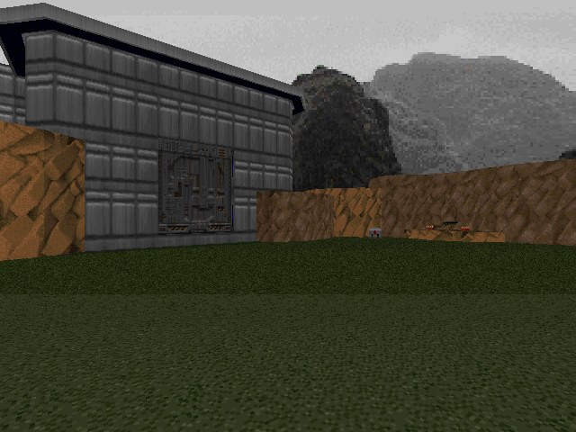

DOWNLOAD LINKS


| Year | 2023 |
| IWAD | Doom II |
| Source port | Boom/UMAPINFO-compatible |
| Game mode(s) | Single-player, Coop |
| Map(s) contributed | MAP06 |
2 Enemy Community Project is exactly what it says on the tin - a collection of maps by various Doom mappers with
only two enemy types in each one. The project was hosted by Thatonespymain, and the final compilation includes a
total of 44 maps.
The two enemy types I chose for my own map, "Meatshield Inc.", were chaingunners and mancubi. The map title sort of implies
the kind of playstyle one should employ - ammo is fairly limited here, so the player should lure one enemy type into attacking
the other and let infighting do most of the work. I'm admittedly not entirely happy with how the map turned out in retrospect,
but I had fun making it regardless.